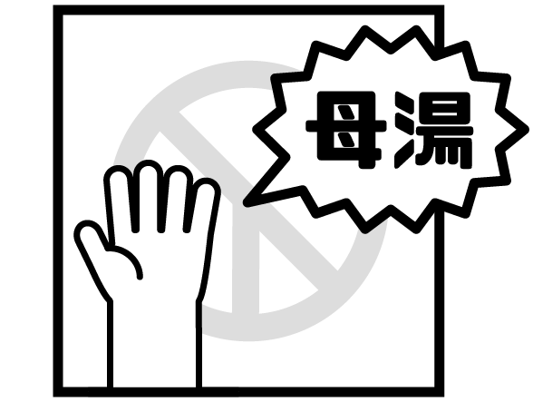
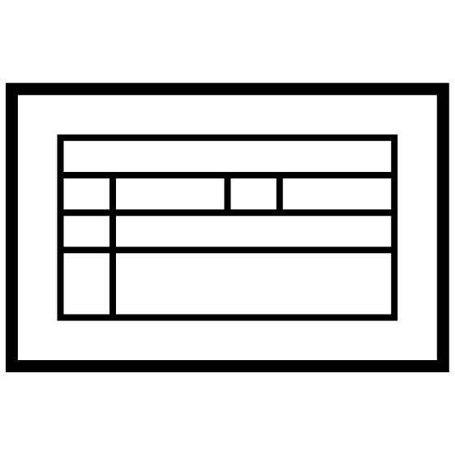
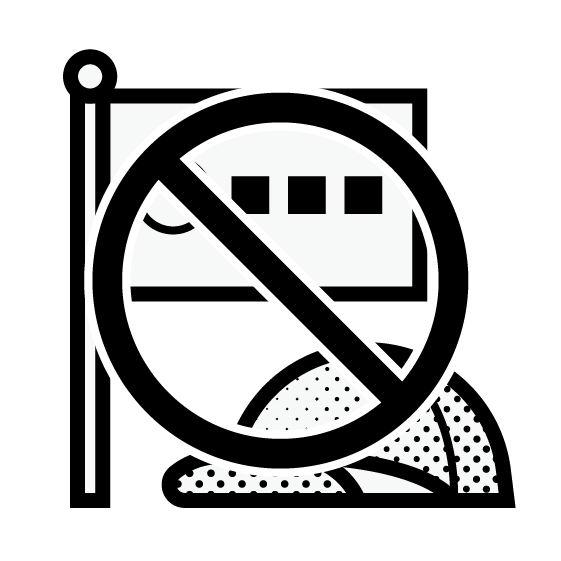
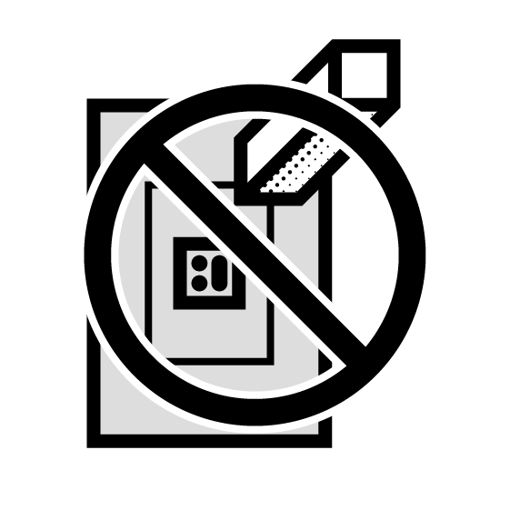
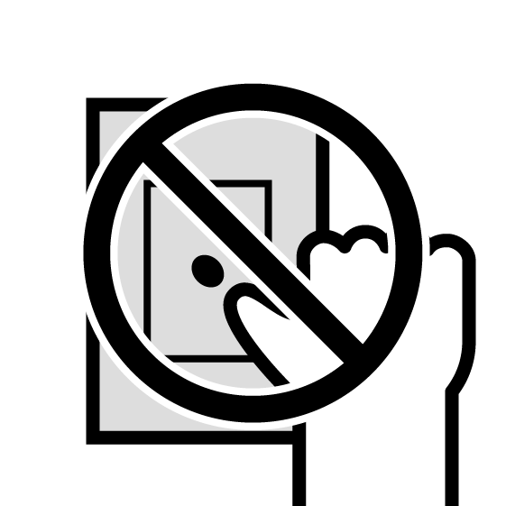
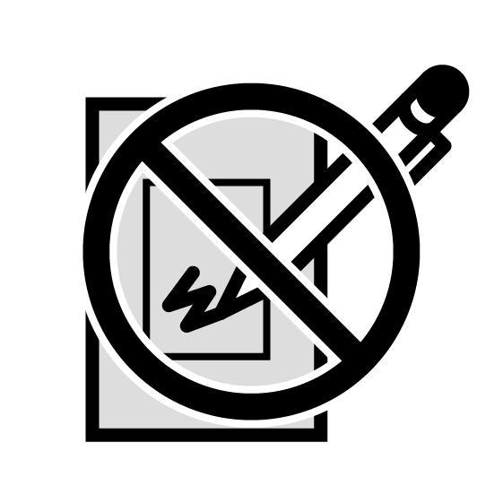

身份證
一定要帶！確認與核對投票人身份，沒有身份證就不能進入投票所。

投票通知單
有帶加分！標示投票所號碼與位置，也有協助選務人員快速查找名冊的編號。
印章
有帶保險！領完票之後需蓋章確認領票，沒有印章可用手印簽名代替。BUT，蓋完手印如果不小心把指紋留在選票上「一秒變廢票」。
有照相錄影通訊功能等物品
（含手機）

與候選人或公投議題相關之物品

選票上不能蓋私章

選票上不能有手印

選票上不能塗改